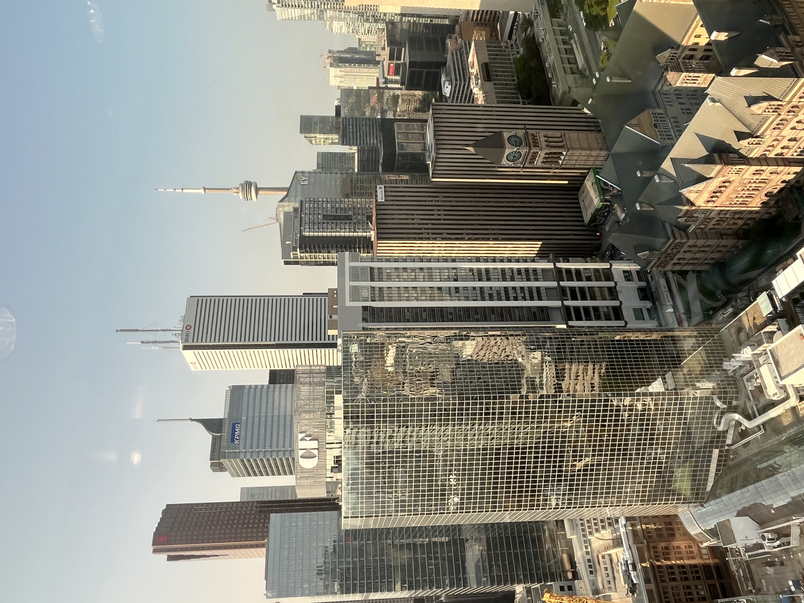
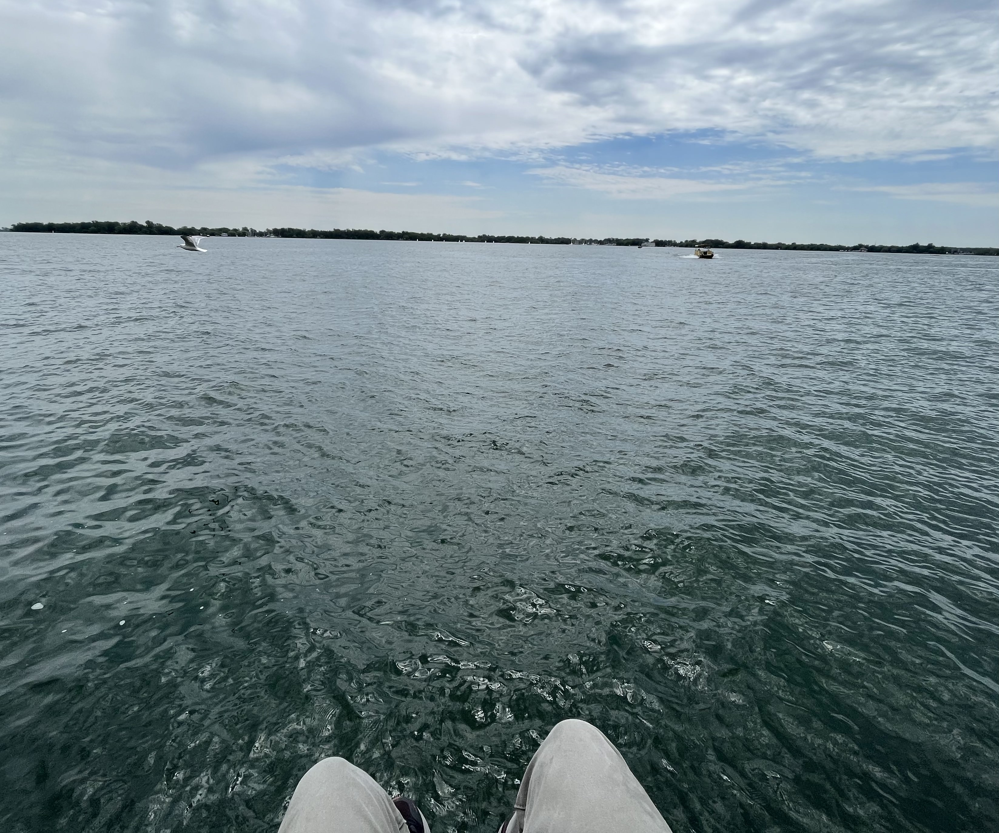
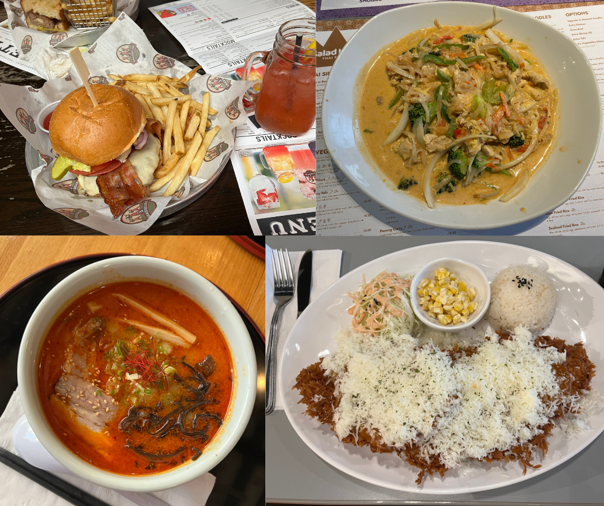

1. Finch
At 7:30 a.m. the bus isn’t that crowded. Unless there's been a long delay, there are always more seats than passengers. A minute before the bus pulls into the terminal, I get up and stand next to the rear exit.
You only need to apply a brief moment of pressure on the back door handle to trigger the mechanism that causes the two doors to open and slide back in a 90 degree rotational motion. I always see others trying to open the door like they were in a dark alley with Jason Voorhees from Friday the 13th chasing them—as if it was crucial that the opening of a door must also be a display of force, or that their time is so precious and important that even the potential for making the door open a split second faster by applying greater pressure to it is necessary. I don’t get up to stand in front of the door for either of those reasons. Mine is much sillier. I’m not sure when this started, but sometimes I treat objects as if they too are conscious. Think about it: what if everything around you is alive and collecting experiences, just as you are? I see this as a diagnostic test of one’s empathy. If you take just a few seconds to construct a simple model of what it might feel like to be the bus door, there is no way you would open the door as aggressively as some people do. And if you can’t even bother to do that, why would you bother understanding the feelings of another human being? When the light above the door turns green to signal the fact that the door is now receptive to user inputs, I clasp my right hand around one of the cool metal handlebars and give it a slight nudge. A second later, the doors commence their intended rotational opening motion. “Thanks door,” I think to myself.
The subway platform is three flights below the ground level bus terminal. The first flight of stairs leads to an underground walkway a few hundred meters in length and around the width of a four-lane intersection. Today there was a street musician playing the guitar solo in Hotel California. There’s always a street musician playing something in this corridor connecting the bus terminal to the subway. Other regulars include, an Italian accordionist, a black keyboard player, an elderly Asian flutist, and a Bolivian multi-instrumentalist who I remember seeing as early as seven years ago.
A few hundred metres ahead, a second flight of stairs leads to a mezzanine where most of the other Finch subway station entrances directly descend to. At the bottom of this flight of stairs, the corridor extends for five more metres before opening up to the mezzanine. On either side of this orifice are benches serving as beds for the homeless. I make a right and walk past a convenience store and a Tim Hortons before descending the third flight of stairs to the subway terminal.
The standing platform of the subway terminal is about as wide as the corridor two floors above. On either side are train tracks with two tracks for the rails of the train to run on and a third rail that provides high-voltage electricity to the train—a tidbit of knowledge from back in Grade 6 when all my friends and I were obsessed with the Toronto transit system. We used to joke about touching the third rail and putting our lives to an abrupt end. What I didn’t realise back then is that the third rail is only charged as the train passes by it, and it is otherwise “safe” to walk on, as demonstrated by some very brave (read: idiotic) TikTokers. What I also didn’t realise is that what used to be an offhand comment is now becoming an appealing course of action. Well I suppose touching the third rail wouldn’t do anything, but what does it matter when there’s a train about to run you over?
Call me crazy, but I think it’s comforting having the option of death so close by. I’ve introspected that one of the fundamental motivations of my conscious mind is to be, or at least feel, in control of my life. When I’m not in control, I get anxious and start to act irrationally, as my mind tries to prove to itself that it is in fact still in control of my destiny. And is suicide not the ultimate irrational act? Is deciding whether one lives or dies not the highest level of control? It’s these moments, standing on the subway platform, cutting meat with a powerful cleaver, leaning over the edge of a tall place, where I feel my mind is the clearest and most relaxed, comforted by the get-out-of-jail free card at my disposal.
Since Finch is a terminal station, subways will wait a few minutes at the terminal before restarting their route. As a result, I am able to board a train immediately and find a seat for myself. I take my backpack off, put it on top of my lap, and rest my forearms on top. My subway ride is 14 stops and 40 minutes long. I used to listen to podcasts or read a book during this time, but recently I have just been sitting and letting my thoughts flow. It's not a comfortable exercise, but a necessary one. There’s too much cognitive dissonance in my head, too many suppressed beliefs I want to get rid of.
A descending B-flat major triad echoes through the train as the doors close. 14 stops, 40 minutes.
2. North York Centre
We ask so many questions in a day, yet seldom do we ponder the most important one: Why am I living, and should I stay alive? Surely this ought to be at the top of everyone’s mind. For no matter your present situation, you are living. And what good is it deciding what to eat for lunch or what classes to take next semester when you don’t even know whether the apparatus facilitating it all is worth preserving? To be or not to be… seems like Hamlet had the same question. How did that soliloquy end again? I think he concludes that the fear of death is what keeps us alive. Then everyone dies because of Hamlet’s indecisiveness. Well that’s really just great news for me isn’t it.
The fear of death is what keeps us alive… am I afraid of death? I suppose at the evolutionary level, a species with no desire to spread one's genes would quickly be eradicated. The fact that homo sapiens are still around suggests that we have a desire for reproduction. And a prerequisite for that is to stay alive until then. So yes, I am subconsciously afraid of death. We all are.
I think every fear can be attributed back to the fear of death. Just as humans are bad at interpreting large numbers, the spectre of death is such a large threat that most of us are unable to acknowledge it directly. Instead, we let this fear permeate into every other aspect of our lives. For example, I’m scared of spiders. Why? Well the fear of being killed by a spider, however unlikely that may be, is a subset of the fear of death. If I wasn’t afraid of death, why would I be afraid of spiders? Consider a more convoluted example: why do we get anxious before exams? My main reason is that failing an exam affects your academic career, which affects your professional career, which affects your wealth, which affects your ability to afford food, water, shelter… things essential in avoiding death. Perhaps for someone else it is the fear of having to retake the course, which is driven by the fear of social ostracism from your current classmates, which is driven by the fear of loneliness; of having no friends or family to help you in times of need… in times of life or death. When traced to their logical conclusions, some of these fears appear outlandish and irrational, and we can recognize them as such. But it is equally important to recognize that the little man behind the curtain only understands one probability: the chance that you will die is 100%. You can’t reason with it, nor should you.
To reiterate, it is encoded in our DNA to be afraid of death. The fact that we have a limited time on earth dictates all of our actions. However, I also feel more relaxed when the option of death is nearby because my conscious mind enjoys the feeling of control. But why do I want to be in control? And in control of what exactly?
My body jerks toward the back of the train as it begins its deceleration. The automated female conductor’s voice announces our arrival at the next station. In Toronto, stations either have a central platform with northbound trains passing through one side and southbound trains through the other (from an aerial view: rail-platform-rail), or two isolated platforms facing each other, each with tracks in front of them (platform-rail-rail-platform). Every station south of Eglinton has isolated platforms and every station north of and including Eglinton has a central platform. The one exception is North York Centre, which has the isolated platform-rail-rail-platform layout despite being north of Eglinton.
3. Sheppard-Yonge
The one thing in the world we can exercise direct control over are our actions and our attitudes. New situations are presented to us daily and we use our minds and bodies to navigate them to increase the probability of desired outcomes. Here lies another coping mechanism for death. One cannot wrap their head around the fact that death is uncontrollable, so instead they control what they can. I can control my grades by studying. I can control my fitness by exercising. And when the expected outcomes are not received, this lack of control is the source of frustration.
Consider a chess game with mate in 3 on the board. By definition, no matter what moves you make, the game should be over in 3 moves. There’s no controlling that. Except… you can play a “worse” move that lets you get mated in 1 or 2 moves instead. Or faster yet, simply resign the game. By resigning, you are exercising what little control you have over the inevitability of your loss. The outcome is the same, but at least you ended the game on your own terms. Extending this analogy, if death is inevitable, should it not be natural to want to end your life on your own terms? Of course, this brings us back to the question of whether life is worth living.
If death is synonymous with fear, then I think life should be synonymous with hope. Hope that your dreams will come true, that the actions you take can steer the future even a degree towards the direction you want, or that a higher being will write a happy ending for the story of your life. We may only be around for a limited amount of time, but it is more than enough time to do some pretty fucking awesome things.
Another similarity between life and hope is their finiteness. Each day that elapses where your actions seem to have no control over your outcomes, where nothing changes except for the fact that you are one day closer to death, a sliver of hope is lost, until eventually hopelessness overcomes the fear of death: a suicide.
I think I’m still hopeful for many things, the most immediate of which is the possibility that I will find an answer to why life is worth living. Ultimately, I’m hopeful that on my deathbed, I will be glad that I didn’t die sooner because that would have denied me of a life well lived. But this hope has been dwindling for months on end. It’s like there is a weight hooked to the bottom of my heart constantly weighing it down and getting a few grams heavier each night. These days I can’t help occasionally checking my pulse to make sure it’s still normal. Enough of that doom and gloom talk though. How can I be so hopeless about life when I’m not even sure what I want out of it yet? Aye there’s another question with no clear answer.
Deciding what you want from life is like finding a favourite menu item at a restaurant. The options are laid out right in front of you and you can ask as many people as you want for recommendations. But theory will only take you so far 😉 and everyone has different tastes. The only way to find your favourite item is to try all of them yourself. In a capitalist system, I can only do that if I’m not broke. So it seems crystal clear to me that the first priority is financial independence, however naive you might think that is.
Sheppard-Yonge is the first of two interchange stations between Finch and Dundas. The intersecting subway line runs from east to west, collecting people from across North York and dropping them off at Sheppard-Yonge. The platform is flooded with such commuters waiting to board a train like the one I’m in, heading southbound to downtown Toronto. As the train comes to a halt, the onboarders form queues on either side of the doors, allowing exiting passengers to pass through the gap between the queues before boarding the train two-by-two.
4. York Mills
Financial independence is such an intriguing concept. The phenomena of rich and poor has been around since the agricultural revolution heightened private ownership. Lords owned the land while serfs worked it, plantation owners sold cotton while slaves picked it, and the bourgeoisie own the means of production while the proletariat operates them. For all of human history, the rich took financial independence for granted while the poor never even had it as a goal.
The middle class is a fairly new phenomenon. Created as a compromise between two extremes and popularised in the United States during the Gilded Age, it was a scalable formula for achieving financial independence en masse which quickly swept across the world. If you got an education and worked a 9-to-5, you could afford a house and a vacation once in a while. And if all goes according to plan, by your sixties you can retire and live out the remaining years of your life.
Being able to escape poverty and advance into this lifestyle must have been terrific. But being born into it, I can’t help but feel hopeless and ungrateful. Is that really all life has to offer? Is selling your labour for money supposed to be acceptable now because you’re entitled to 3 weeks vacation and health benefits? Will no one talk about how the retirement threshold is set at the age where you begin to be plagued by maladies and lose all the energy and vigour you once had (actually it seems like the French do have something to say about this)? And what of the home ownership crises infecting all the Tier 1 cities in North America? But let’s say we throw all this aside and remain hopeful.
On a risk adjusted basis and given my current skill set, the obvious pathway to financial independence is a private sector job in computer science or finance (the 2 subjects I’m majoring in). I don’t want anything extraordinary: just to work smart, retire early, and meet some cool people along the way. If that means doing LeetCode and making side projects to get internships then I’ll do it. If that means learning new technologies in my spare time then I’ll do it. If that means joining clubs and networking then I’ll do it. The problem is, I find some of these things inherently enjoyable, but when doing them out of necessity, the fun factor disappears. It takes over my life and makes me lose sight of the long-term game plan. It overwhelms me with cynicism and nihilism. It makes me lose another sliver of hope each passing hour. We’re at the next station now.
To be continued...
Yeah another depressing post, I know. I swear I'm not like this in real life. I write to organize the nasty thoughts in my head. Isn't it better to tackle them in solitude than to let them surface at ill-timed moments?
Over the past four months, I have been working as a software developer intern at Bank of America. For three days each week, I took a bus and then the subway to their office in downtown Toronto. My morning commute is the inspiration for this post. I wrote this over the span of a month to write and am not sure when I'll be able to find the time to finish it, but I definitely hope to at some point.
And here's my triannual photo gallery!



News: Trump has a mugshot taken in an Atlanta prison, Prigozhin's private aircraft explodes and kills him, Microsoft announces Python in Excel.
Reading: The Myth of Sisyphus, Albert Camus